協同產品設計實習
stage1-bg1
掃地機器人
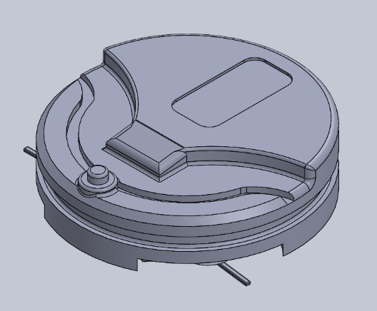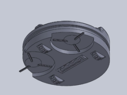
動機:利用自動化機械結構來滿足靠人力打掃家中的需求，並實現節省時間及勞力的願景。
構造原理
使用前面2個葉片將垃圾灰塵等細屑掃入後方的滾軸，由滾軸將其帶入內部，由1個前輪和1組連通軸輪帶動整部機器前進
結構零件圖
本體(body)
掃地機器人的身體，藉由身上的凹槽感測身邊有無障礙物
葉片(Fan)
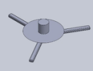
將垃圾灰塵等掃入的主要零件，由3隻刷子構成
前輪(Front Wheel)
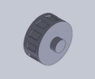
支撐本體前面並帶動前進
內部滾輪(Internal Scroll Wheel)
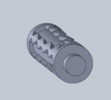
把東西掃入和移除的構造
後輪(Back Wheel)
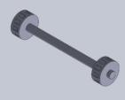
帶動本體前進的主要來源
CoppeliaSim模擬
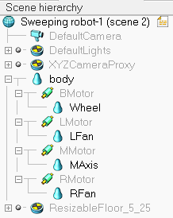
body→本體 BMotor→後馬達 Wheel→輪子 LMotor→左(葉片)馬達 LFan→左葉片 MMotor→中間的馬達 MAxis→中間的軸 RMotor→右(葉片)馬達 RFan→右葉片
CoppeliaSim模擬
3/6初次模擬
第1版

問題:前面無任何支撐物，所以導致本體一直前頃
3/6二次模擬
第2版

問題:雖然增加了支撐物，但會影響前進
3/6三次模擬
第3版

將支撐物改為輪子，但因前後輪馬達不一致，導致打轉的情況
3/7四次模擬
第4版(最終版)

能夠正常前進，葉片和內部滾輪也運作正常
問題!小組倉儲維護
主旨
由組長和組員一同維護小組倉儲，各自推送各自所做的部分，但是我們卻沒有同步，導致只有組長的倉儲有在運作
解決方法
創建1個新的空倉儲(因為本人為組長，所以新辦1個github帳號做步驟)
Repository name輸入名稱，什麼都不要選直接create
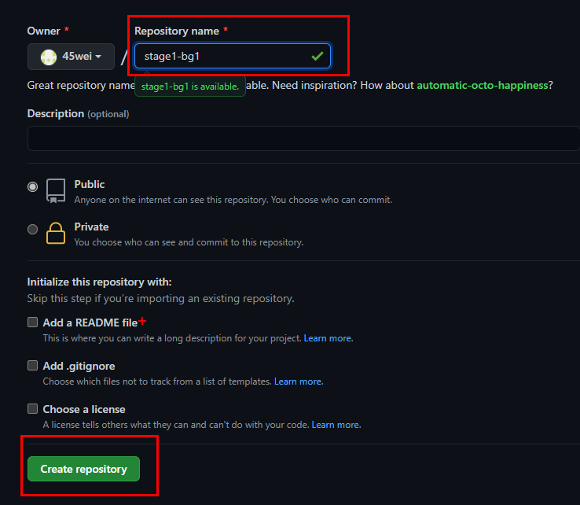
進到tmp執行git clone --recurse-submodules 小組網址(因我tmp有stage1-bg1了，所以直接在data做)
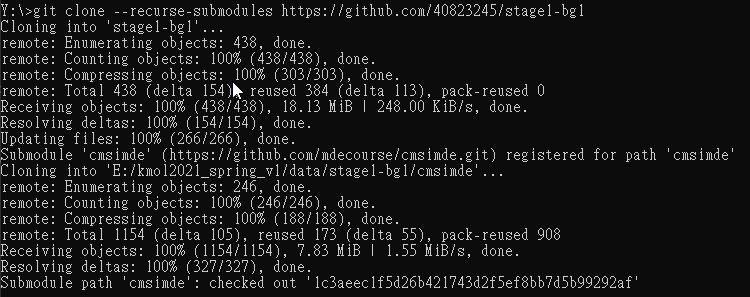
進到資料夾，執行git remote add 「remote名稱」 個人github倉儲網址.git(剛剛創的空倉儲)
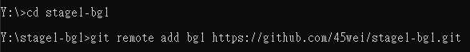
可看到多了remote(如有做ssh，請自行在remote底下新增，我用新帳號所以沒有使用)
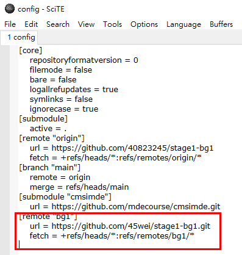
執行git push 剛剛「remote名稱」
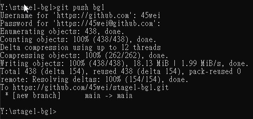
成功後到settings設定
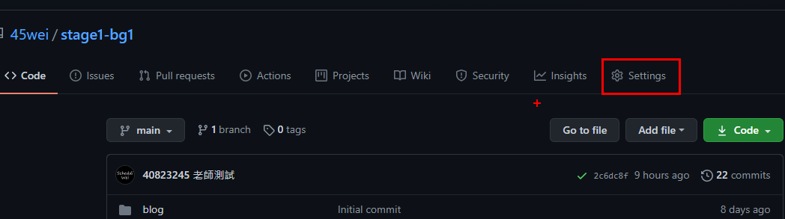
把branch設為main並save
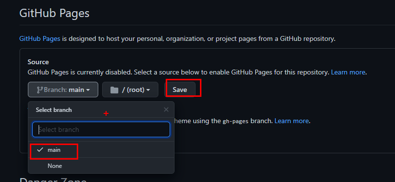
回去看是否有綠勾
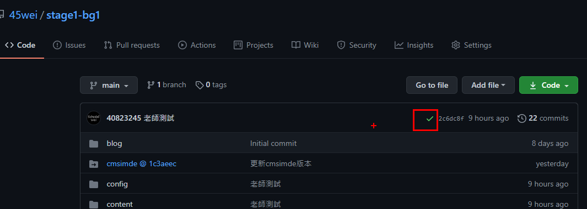
分組有效方案
我認為自選組員比亂數分組好很多，因為自選的組員都是互相有共識才會同意一起做協同，但是利用人工的方式分組太耗費精神和人力了，所以需要藉由程式來代工，但是用程式來亂數分組就可能造成合作上的困擾，希望能找到解決辦法。
40823245測試分組程式

40823245測試分組程式